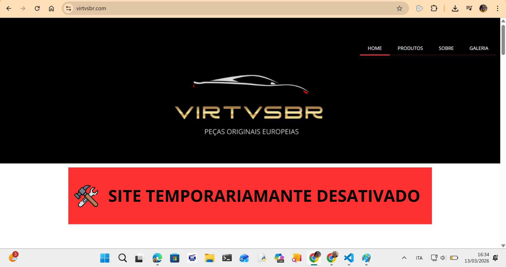
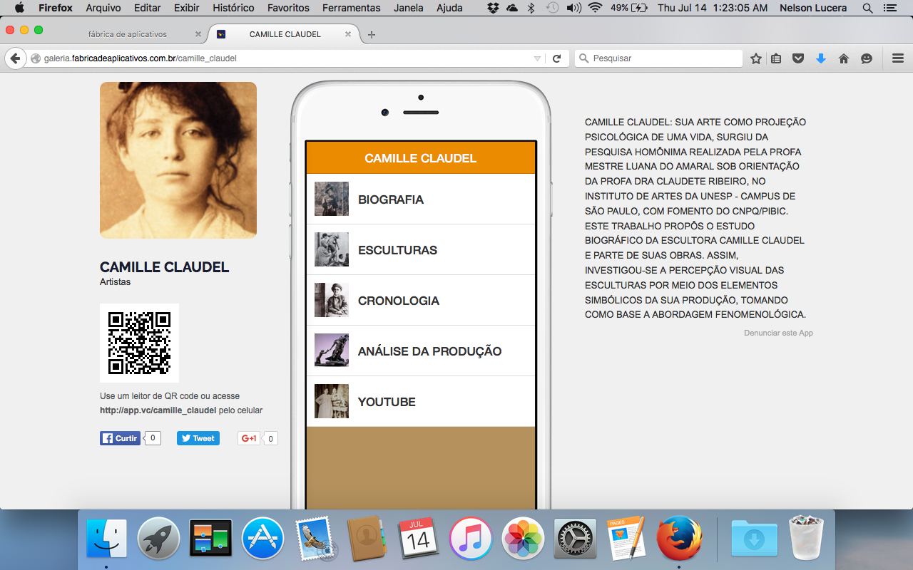

Sobre mim
Sou professora de Artes por formação e atuei por vários anos na área da educação, experiência que me proporcionou muito aprendizado e desenvolvimento pessoal. Atualmente, estou vivendo um momento de transição de carreira e direcionando meus estudos para a área da tecnologia, um campo que tem despertado grande interesse e entusiasmo em mim.
Nos últimos tempos, venho me dedicando ao desenvolvimento de habilidades em programação front-end e back-end, com foco na criação de soluções digitais, desenvolvimento web e construção de aplicações. Durante essa jornada de aprendizagem, tenho buscado aprofundar meus conhecimentos em linguagens de programação, lógica computacional e no desenvolvimento de interfaces e sistemas.
Ainda estou dando meus primeiros passos nesse universo da tecnologia, mas estou muito motivada com as possibilidades que ele oferece e com muita vontade de aprender, evoluir e crescer profissionalmente.
Este portfólio reúne alguns projetos e experiências desenvolvidos ao longo do meu processo de aprendizagem na área de tecnologia.
Habilidades
Técnicas
- HTML
- CSS
- JavaScript
- Git e GitHub
- Python (em processo)
Comportamentais
- Organização
- Responsabilidade
- Comprometimento
- Trabalho em equipe
- Aprendizado contínuo
- Resolução de problemas
Projetos
Site da Exportadora VIRTVSBR

Desenvolvimento de landing page institucional utilizando o construtor de sites da Locaweb, com adaptação de template, organização de conteúdo e configuração das seções de apresentação e contato da empresa.
Ferramentas utilizadas: Construtor de Sites Locaweb
Demonstração: Acessar o site
Site da Advocacia Nelson Lucera Filho

Site institucional desenvolvido para o escritório de advocacia Nelson Lucera Filho, com o objetivo de apresentar o escritório, suas áreas de atuação e facilitar o contato com clientes. O projeto foi elaborado utilizando o construtor de sites da Locaweb, com adaptação de template, organização da estrutura da página e personalização do conteúdo.
Ferramentas utilizadas: Construtor de Sites Locaweb
Demonstração: Acessar o site
Aplicativo mobile – Vida e obra de Camille Claudel

Aplicativo mobile desenvolvido utilizando a plataforma Fábrica de Aplicativos, com o objetivo de apresentar a vida e as obras da escultora francesa Camille Claudel. O aplicativo reunia informações biográficas, imagens de esculturas e conteúdos educativos voltados à divulgação da história da arte.
Ferramenta utilizada: Fábrica de Aplicativos
Status: Projeto desenvolvido e publicado anteriormente na plataforma, atualmente indisponível.
Contato
Se você deseja entrar em contato comigo para fazermos uma parceria ou apenas para conversar sobre tecnologia, sinta-se à vontade para me enviar uma mensagem através do formulário abaixo: